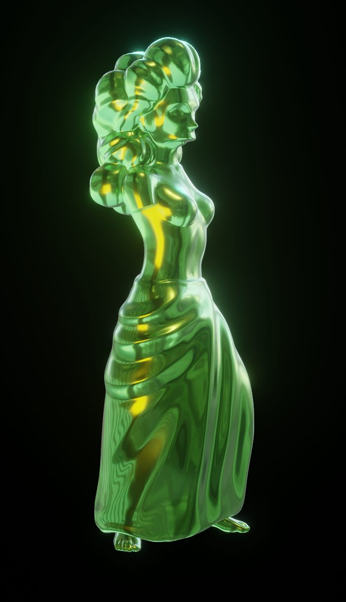

Gummi Venus de Milo: The simpsons

Description
The rarest gummi of them all, it was carved by gummi artisans who work exclusively in the medium of gummi.
Ingredients
- Cooking spray, for the mold
- 3 ounces flavored gelatin
- 1 (1/4-ounce) envelope unflavored gelatin
- 1/3 cup cold water
Preparation
- Spray a paper towel with nonstick cooking spray, then rub it lightly around the bear cavities in the mold to coat them with a thin layer of oil.
- In a small bowl, combine both gelatins and the cold water.
- Whisk them together, then let them sit at room temperature for 10 minutes to allow the gelatin to soak up the water and soften.
- Place the bowl in the microwave and cook for 30 seconds, then whisk well. Microwave for another 30 seconds and stir. The sugar should be dissolved and the mixture well mixed. If not, microwave for another 10 to 15 seconds until the sugar and gelatin are completely dissolved. Pour it into a measuring cup with a spout.
- Pour the gelatin into the cavities. Alternatively, you can use a food-grade dropper to drop the mixture more precisely into the molds.
- Place the candy mold in the refrigerator for about 20 minutes to set the gelatin.
- To remove the Venus de Milo, carefully push the sides away from the edges and toward the center, then pull them up and out of the molds. Repeat with other colors and flavors of gelatin, as desired.
- Serve and enjoy.